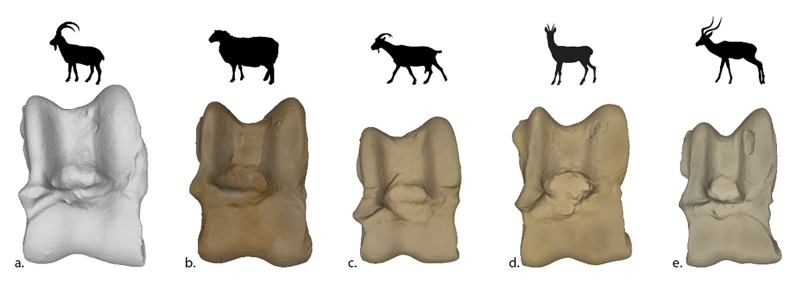

Question directrice
Quels indices permettent de rapprocher un os d'un animal, et que faut-il encore vérifier ?
Activité 2 · Comparer et argumenter
Une enquête pour comparer des formes, proposer une association et apprendre à dire ce que les indices permettent réellement de conclure.
Prototype imprimable : les cartes animaux et les repères anatomiques sont disponibles, mais les vrais os A à D et le corrigé d'identification doivent encore être constitués et validés. Cette version entraîne la méthode, pas une identification experte.
Comprendre l'activité
Quels indices permettent de rapprocher un os d'un animal, et que faut-il encore vérifier ?
Ils décrivent, comparent et classent des indices avant de défendre une hypothèse avec un vocabulaire de prudence.
Comprendre qu'une attribution repose sur un faisceau d'indices, des références et parfois des mesures.
L'élève argumente sans deviner et sait dire pourquoi son association reste provisoire.
Déroulement
Relever largeur, allongement, surfaces, bosses et creux visibles.
Observer taille, locomotion et forme générale des membres sans chercher une réponse immédiate.
Écarter les arguments trop faibles et retenir au moins deux indices observables.
Écrire « possible », « probable » ou « à vérifier », puis expliquer ce choix.
Comparer les propositions et lister les références ou mesures nécessaires.
Organisation : groupes de deux à quatre, puis débat collectif. La chauve-souris, si elle est introduite, reste un prolongement sur la diversité des mammifères et non une carte du corpus principal.
Variante institutionnelle
Le corpus doit être adapté aux collections et validé par l'institution. L'activité peut se faire devant une vitrine, avec des photographies documentées, des moulages ou des objets manipulables si les règles du musée l'autorisent.
HTML imprimable et PDF WIP
Observer et comparer
Les animaux donnent un contexte de comparaison ; les images anatomiques servent à localiser les membres. Elles ne remplacent pas le corpus d'astragales A à D encore manquant.

Cheval : observer le membre et la locomotion sans en déduire seul l'os.
Ealdgyth, CC BY-SA 3.0, via Wikimedia Commons.

Mouton : comparer proportions et appuis.
José Luis Cernadas Iglesias, CC BY 2.0, via Wikimedia Commons.

Cerf : introduire un mammifère sauvage du corpus comparatif.
Luc Viatour, CC BY-SA 3.0, via Wikimedia Commons.

Porc : rechercher ressemblances et différences visibles.
Joshua Lutz, CC BY-SA 4.0, via Wikimedia Commons.

Pied de mouton annoté : repérer la région du tarse.
Caroline Eroline, CC BY-SA 4.0, via Wikimedia Commons.

Squelette de mouton : replacer le pied dans l'animal.
Museum of Veterinary Anatomy FMVZ USP / Wagner Souza e Silva, CC BY-SA 4.0.

Squelette de porc : comparer l'organisation du membre.
Museum of Veterinary Anatomy FMVZ USP / Wagner Souza e Silva, CC BY-SA 4.0.

Schéma de cheval : support de localisation, non clé d'identification.
WikipedianProlific, CC BY-SA 3.0, via Wikimedia Commons.

Visuel provisoire — source, pertinence scientifique et droits à valider avant publication définitive.
Figure comparative de cinq petits ruminants utilisée uniquement pour tester le type et l'emplacement d'un futur support. Les espèces étant nommées, elle ne constitue ni le corpus A-D, ni une réponse, ni une preuve d'identification.
Vuillien et al., figure 1, Journal of Computer Applications in Archaeology, DOI 10.5334/jcaa.181. Conditions de réutilisation non établies.
Corpus manquant : les photographies validées d'astragales A à D, avec espèce, orientation, échelle, provenance et droits, ne sont pas encore publiées. Les emplacements des cartes ne constituent pas un corpus réel.
Décrire au moins trois caractéristiques avant toute attribution.
Relier deux indices à l'hypothèse et nommer une incertitude.
Réduire le nombre de cartes, fournir une banque de mots ou faire dicter la conclusion.
Traçabilité et limites
À compléter : os A-D documentés, métadonnées, correction finale et validation archéozoologique. La chauve-souris peut servir de prolongement, mais ne fait pas partie du cœur du corpus.
Version actuelle : parcours de comparaison utilisable pour apprendre à argumenter, avec cartes d'os provisoires clairement signalées.
Objectif final : intégrer un corpus A-D documenté et produire une correction seulement après validation scientifique et tests d'usage.